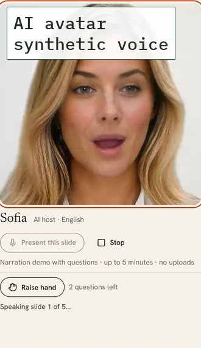
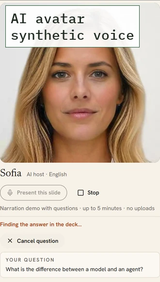

Oz Radio: a presentation you can interrupt
An AI avatar presents any deck live; raise your hand and ask by voice. The same deck can become a narrated video or a two-host podcast, in more than ten languages.
Live AI avatar · capped daily
One question, three frames
-

Presenting · slide 1 of 5
-

Voice question, transcribed: ‘What is the difference between a model and an agent?’
-

Answers from the deck (From slides 2 and 3). The answer ends: ‘The key difference is that an agent can actually get things done, not just talk.’
Present, narrate, podcast
Oz Radio turns PowerPoint decks into AI-presented training: an AI avatar presents your slides live, renders narrated videos, or hosts a two-avatar podcast.
In the live demo, raising your hand pauses the presentation; you ask by voice, and the answer comes from the deck.
Built on Azure AI Speech (Voice Live and batch avatar), Azure OpenAI and Azure Container Apps.
Where it stops
- The public demo needs no sign-in, is time-boxed and is capped daily, behind hard server-side cost guardrails; its daily budget fails closed.
- Voice and typed questions are available when the owner enables them.
- It takes no uploads: it presents decks published for the demo. To present your own deck, deploy it from the source.
- The frames show one session and one question, not a measure of answer quality.
- Personal open-source sample, not a Microsoft product.
Let people interrupt
In this session it stopped for a raised hand, and its answer named the slides it came from: two habits I want from any agent.